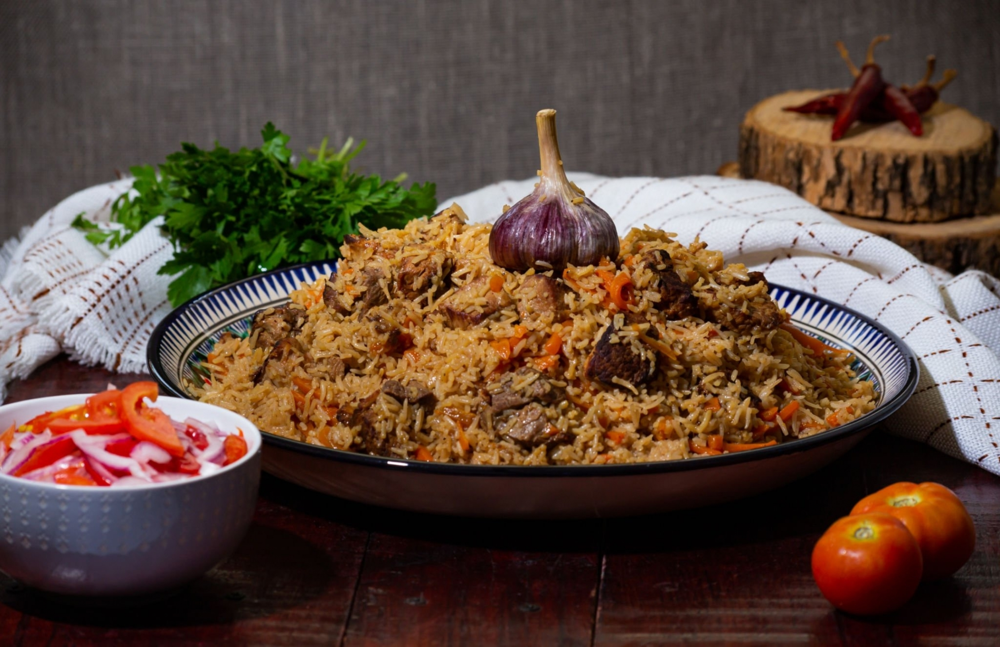

Ugali

Ugali, also known as posho, nsima, and other names, is a type of corn meal made from maize or corn flour in several countries in Africa
Pilau

Ugali, also known as posho, nsima, and other names, is a type of corn meal made from maize or corn flour in several countries in Africa
Githeri

Ugali, also known as posho, nsima, and other names, is a type of corn meal made from maize or corn flour in several countries in Africa